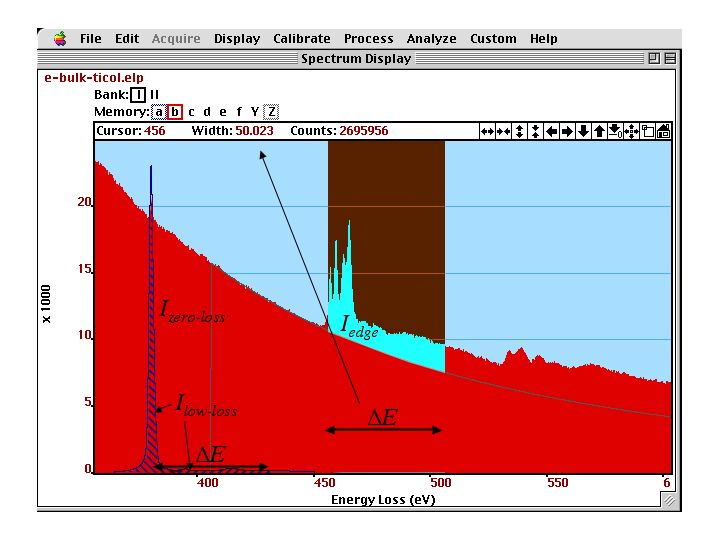
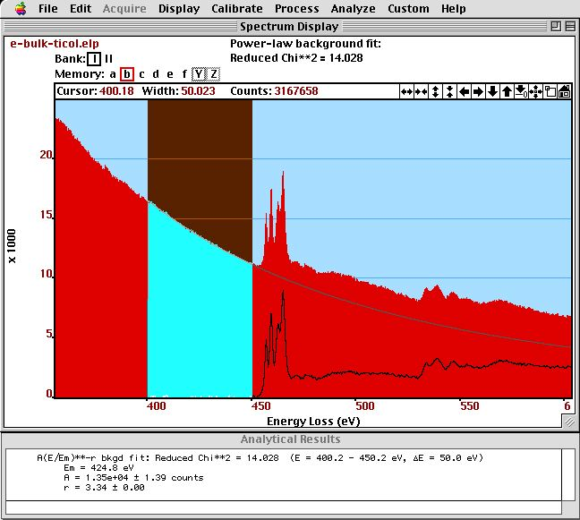
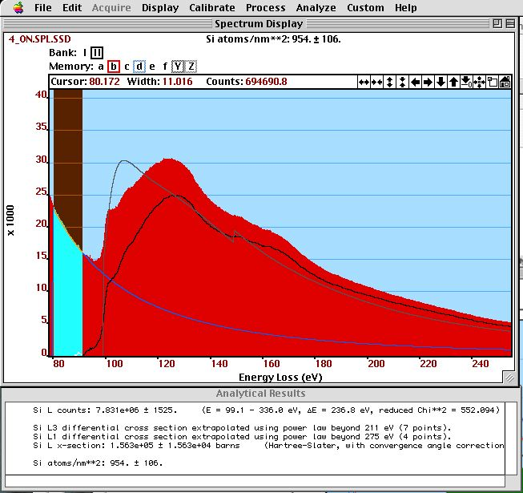
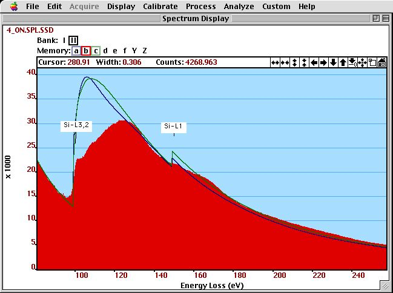

Chapter 4: Spectroscopy
Chemical Composition in Core-Loss Spectra¶

part of
MSE672: Introduction to Transmission Electron Microscopy
Spring 2026 by Gerd Duscher
Microscopy Facilities Institute of Advanced Materials & Manufacturing Materials Science & Engineering The University of Tennessee, Knoxville
Background and methods to analysis and quantification of data acquired with transmission electron microscopes.
Content¶
Quantitative determination of composition in a core-loss EELS spectrum
Please cite:
as a reference of the here introduced model-based quantification method.
Load important packages¶
Check Installed Packages¶
[1]:
import sys
import importlib.metadata
def test_package(package_name):
"""Test if package exists and returns version or -1"""
try:
version = importlib.metadata.version(package_name)
except importlib.metadata.PackageNotFoundError:
version = '-1'
return version
if test_package('pyTEMlib') < '0.2026.1.1':
print('installing pyTEMlib')
!{sys.executable} -m pip install --upgrade pyTEMlib -q
print('done')
done
Import all relevant libraries¶
Please note that the EELS_tools package from pyTEMlib is essential.
[30]:
%matplotlib ipympl
import sys
import matplotlib
import matplotlib.pylab as plt
import numpy as np
import scipy
if 'google.colab' in sys.modules:
from google.colab import output
from google.colab import drive
output.enable_custom_widget_manager()
## import the configuration files of pyTEMlib (we need access to the data folder)
import pyTEMlib
# For archiving reasons it is a good idea to print the version numbers out at this point
print('pyTEM version: ',pyTEMlib.__version__)
pyTEM version: 0.2026.1.3
Chemical Composition¶
We discuss first the conventional method of EELS chemical compoisition determination
In this chapter we use the area under the ionization edge to determine the chemical composition of a (small) sample volume. The equation used to determine the number of atoms per unit volume \(N\) (also called areal density) is: \begin{equation} I_{edge}(\beta, \Delta E) = N * I_{0}(\beta) * \sigma_{edge}(\beta, \Delta E) \end{equation}
\(I_0\) is the number of electrons hitting the sample, and so directly comparable to the beam current.
The equation can be approximated assuming that the spectrum has not been corrected for single scattering: \begin{equation} I_{edge}(\beta, \Delta E) = N * I_{low-loss}(\beta,\Delta E) * \sigma_{edge}(\beta, \Delta E) \end{equation} where \(\beta\) is the collection angle and \(\sigma_{edge}\) is the partial cross–section (for energy window \(\Delta E\)) for the core–loss excitation.
The integration interval \(\Delta E\) which defines \(I_{edge}(\beta, \Delta E)\) and \(I_{low-loss}\) is shown in figure below.

Valence–loss, core–loss edges and background of SrTiO:math:`_3`]{:nbsphinx-math:`label{fig:edge2}` Ti-L:math:`_{2,3}` and O-K (right) core–loss edges and background of SrTiO:math:`_3`. The valence-loss spectrum with the zero–loss :math:`I_{zero-loss}` and low–loss intensities $I_{low-loss} $ to be used in the quantification are displayed in the background.
If we cannot determine the intensity of the zero-loss peak \(I_{zero-loss}\) or of the low-loss area \(I_{low-loss}\), we still can determine relative chemical compositions of two elements \(a\) and \(b\) considering that:
\begin{equation} \frac{N_a}{N_b} = \frac{I_{e_a}(\beta, \Delta E)}{I_0 \sigma_{e_a}(\beta, \Delta E)} \frac{I_0 \sigma_{e_b}(\beta, \Delta E) } {I_{e_b}(\beta, \Delta E)} \nonumber \end{equation}
\begin{equation} \frac{N_a}{N_b}= \frac{I_{e_a}(\beta, \Delta E)\sigma_{e_b}(\beta, \Delta E) } {I_{e_b}(\beta, \Delta E)\sigma_{e_a}(\beta, \Delta E) } \end{equation}
and the value \(I_0\) cancels out.
The integration windows for the two edges \(\Delta E\) should be the same, but can be chosen differently as long as we use a different cross-section \(\sigma\) as well. For that case we get:
\begin{equation} \ \frac{N_a}{N_b} = \frac{I_{e_a}(\beta, \Delta E_a)\sigma_{e_b}(\beta, \Delta E_b) } {I_{e_b}(\beta, \Delta E_a)\sigma_{e_a}(\beta, \Delta E_a) } \end{equation}, \Delta `E_a):nbsphinx-math:sigma`_{e_a}(\beta, :nbsphinx-math:`Delta `E_a) } \end{equation}
Note, that the use of different integration windows usually results in a larger error of the quantification.
In order to use the above equation we first have to determine the background under the edge. This background is then subtracted from the spectrum. Then we integrate over the different parts of the spectrum to determine the integrals (sums) of \(I_{edge}\), and \(I_{zero-loss}\), or $I_{low-loss} $ (depending whether we did a SSD first or not). After that we have to determine the cross-section (notebook) for each edge for the parameter \(\beta\) and \(\Delta E\).
Background Fitting¶
The core-loss edges occur usually at energy-losses higher than 100 eV, superimposed to a monotonic decreasing background. For quantification of the chemical composition we need the area under the edge of a spectrum, and therefore, need to subtract the intensity of the background under the edge. Here we discuss several methods of how to determine the intensity of the background under the edge.
The high energy tail of the plasmon peak follows the power law \(A E^{-r}\). The parameter is varies widely and is associated with the intensity of the background. \(E\) is the energy loss. The exponent \(r\) gives the slope and should be between 2-6. The value \(r\) usually decreases with increasing specimen thickness, because of plural-scattering contributions. \(r\) also decreases with increasing collection angles \(\beta\), but increases with increasing
energy–loss.
Consequently, we have to determine the parameters :math:`A` and :math:`r` for each ionization edge.
The fitting of the power law \(A E^{-r}\) (to determine \(A\) and \(r\)) is usually done in an area just before the edge, assuming that the background follows the same power law under the edge. This fit can only work if the detector dark current and gain variation is corrected prior to the analysis.
A standard technique is to match the pre–edge background \(J(E)\) to a function \(F(E)\) (here the power law) whose parameter (here \(A\) and \(r\)) minimize the quantity: \begin{equation} \chi^2 = \sum \limits_{i} \left[ \frac{J_i - F_i}{\sigma_i} \right]^2 \end{equation} where \(i\) is the index of the channel within the fitting region and \(\sigma_i\) represents the statistical error (standard deviation) of the intensity in that channel.
The value \(\sigma_i\) is often considered constant (for example \(1/3\) or \(e^{-1}\)). For our problem, the quantum mechanical shot noise is adequate \begin{equation} \sigma_i = \ln(J_i - \sqrt{J_i}) - \ln(J_i) \approx \sqrt{J_i} \end{equation} where we assume that \(J_i\) is in number of electrons and not in counts (number of electrons times a conversion factor).
In the figure below, we see the result and the output of the background fit (plus subtraction).

Background fit on a spectrum of SrTiO\(_3\)]{\label{fig:background} Background fit on a spectrum of SrTiO\(_3\). The \(A\) and \(r\) parameter together with the normalized (reduced) \(\chi^2_n\) parameter is displayed in the {\bf Results} window.*
Background Fitting: Spatial Difference¶
We can use also an experimentally determined background, if impurity or dopant atoms are present in confined areas only. Then, we can take two spectra: one next to this area and one at this area. The near by area will result in a spectrum without this edge and can be used as a background for quantification of the other spectrum. This method is highly accurate if the sample thickness does not change between these areas. The measurement of ppm levels of dopants and impurity atoms can achieved with this method. This Method will be more closely examined in Section Spatial-Difference
Background Subtraction Errors¶
In addition to possible systematic errors, any fitted background to noisy data will be subject to to a random or statistical error. The signal noise ration (SNR) can be defined as:
\begin{equation} SNR = I_{edge} [var(I_{edge})]^{-1/2} = I_{edge}/(I_{edge}+ h \quad I_{background})^{1/2} \end{equation}
where the dimensionless parameter \(h\) represents the uncertainty of the background fit due to noise. If the width of the integration window is sufficiently small (for example the same width as the fitting window) then this factor \(h\) is relatively small. For equal windows we can approximate \(h = 10\).
Cross-Section¶
The cross–section gives us the weight of the edge intensity to compare to different elements or to the total number of electrons (to compute areal density). Such a cross–sections is compared to an edge intensity in the figure below.

The shape of a calculated cross-section (black) is compared to the intensity of a Si-L:math:`_{2,3}` and Si-:math:`L_{1}` edge after background subtraction (gray). The SSD–corrected spectrum (red) and the extrapolated background (light blue) are also shown. In the results window, we see the integrated edge intensity, the integrated cross-sections and the determined areal density.
There are different methods of how to use cross-sections in the quantification of the chemical composition from spectra:
Egerton gives in his book a tabulated list of generalized oscillator strength (GOS) for different elements. The values for different integration windows \(\Delta E\) can be linearly extrapolated for other integration window widths. The GOS have to be extrapolated for the chosen integration window and converted to cross–sections. The GOS are calculated with the Bethe theory in Hydrogenic approximation (see below in chapter \ref{sec:cross-section-calculate} ### Calculation of the Cross–Section
There are two methods in the literature to calculate the cross–section. One is the one where we assume s states in free atoms and is called Hydrogenic approximation and one which approximates the free atoms a little more detailed: the Hatree-Slater method.
Both methods are based on free atom calculations, because of the strong bonding of the core–electrons to the nucleus, band-structure (collective) effects can be neglected.
The figure below compares the cross–sections of these two approximations (with a background added) to an experimental spectrum.

The shape of a Hydrogenic (green) and Hatree–Slater (blue) cross-section (with a background added) is compared to an experimental (SSD-corrected) spectrum of Si.
Summary¶
The power law is not really correct for any larger energy interval, which results in a change of the \(r\) exponent throughout the spectrum’s energy range.
A polynomial of 2\(^{nd}\) order can be used to fit the spectrum, but often leads to strong oscillations in the extrapolated high energy part.
The exact slope of the extrapolated background depends on pre-edge features and noise
Generally the above described classic method of quantification is often non-reproducible, and results in errors often in excess of 100%.
In the following we will work with a model based method that reduces the artefacts, increases reproducibility and improves the error to about 3 atom % absolute.
Load and plot a spectrum¶
As an example we load the spectrum 1EELS Acquire (high-loss).dm3 from the example data folder.
[46]:
# ---- Input ------
load_example = True
# -----------------
if not load_example:
if 'google.colab' in sys.modules:
drive.mount("/content/drive")
fileWidget = pyTEMlib.file_tools.FileWidget(".")
[67]:
# ---- Input ------
file_name = '1EELS Acquire (high-loss).dm3'
# -----------------
if load_example:
if 'google.colab' in sys.modules:
if not os.path.exists('./'+file_name):
!wget https://github.com/gduscher/MSE672-Introduction-to-TEM/raw/main/example_data/1EELS Acquire (high-loss).dm3
else:
datasets = pyTEMlib.file_tools.open_file('../example_data/'+file_name)
main_dataset = datasets['Channel_000']
else:
datasets = fileWidget.datasets
main_dataset = fileWidget.selected_dataset
main_dataset.metadata['experiment']['exposure_time'] = main_dataset.metadata['experiment']['single_exposure_time'] * main_dataset.metadata['experiment']['number_of_frames']
if main_dataset.data_type.name != 'SPECTRUM':
print('NOT what we want here')
else:
main_dataset.view_metadata()
v = main_dataset.plot()
frames: Number of frames
experiment :
single_exposure_time : 3.0
exposure_time : 63.0
number_of_frames : 21
convergence_angle : 0.0
collection_angle : 0.0
microscope : Unknown
acceleration_voltage : 200000.0
filename : ../example_data/1EELS Acquire (high-loss).dm3
Which elements are present¶
To determine which elements are present we add a cursor to the above plot (see Working with Cross-Sections for details) and with a left (right) mouse-click, we will get the major (all) edges in the vincinity of the cursor.
In the example we note that the N-K edge of this boron nitride sample is not at 400keV. We have to adjust the energy-scale. (THIS SHOULD NOT HAPPEN IN NORMAL SPECTRA AND IS FOR DEMONSTRATION ONLY)
[68]:
class EdgesAtCursor(object):
def __init__(self, ax, energy, data, maximal_chemical_shift=5):
self.ax = ax
self.maximal_chemical_shift = maximal_chemical_shift
self.energy = energy
self.label = None
self.line = None
self.cursor = matplotlib.widgets.Cursor(ax, useblit=True, color='blue', linewidth=2, horizOn=False, alpha=.3)
self.cid = ax.figure.canvas.mpl_connect('button_press_event', self.edges_on_click)
#self.mouse_cid = ax.figure.canvas.mpl_connect('motion_notify_event', self.mouse_move)
def edges_on_click(self, event):
if not event.inaxes:
return
x= event.xdata
if self.label is not None:
self.label.remove()
if self.line is not None:
self.line.remove()
if event.button == 1:
self.label = plt.text(x, plt.gca().get_ylim()[1], pyTEMlib.eels_tools.find_all_edges(x, self.maximal_chemical_shift, True),
verticalalignment='top')
else:
self.label = plt.text(x, plt.gca().get_ylim()[1], pyTEMlib.eels_tools.find_all_edges(x, self.maximal_chemical_shift),
verticalalignment='top')
self.line = plt.axvline(x=x, color='gray')
maximal_chemical_shift = 5
energy_scale = main_dataset.energy_loss
cursor = EdgesAtCursor(main_dataset.view.axis, energy_scale, main_dataset, maximal_chemical_shift)
[69]:
pyTEMlib.eels_tools.find_all_edges(400)
[69]:
'\n N -K1: 401.6 eV \n Sc-L3: 402.2 eV \n Cd-M5: 403.7 eV \n Tb-N1: 397.9 eV \n Yb-N2: 396.7 eV \n Ta-N3: 404.5 eV '
Let’s correct the energy scale of the example spectrum.
Again a shift of the enrrgy scale is normal but not a discripancy of the dispersion.
Probability scale of y-axis¶
We need to know the total amount of electrons involved in the EELS spectrum
There are three possibilities:
the intensity of the low loss will give us the counts per acquisition time
the intensity of the beam in an image
a direct measurement of the incident beam current
Here we got the low-loss spectrum. For the example please load 1EELS Acquire (low-loss).dm3 from the example data folder.
[70]:
# ---- Input ------
load_example = True
# -----------------
if not load_example:
if 'google.colab' in sys.modules:
drive.mount("/content/drive")
ll_fileWidget = pyTEMlib.file_tools.FileWidget()
[71]:
# ---- Input ------
load_example = True
ll_file_name = '1EELS Acquire (low-loss).dm3'
# -----------------
if load_example:
if 'google.colab' in sys.modules:
if not os.path.exists('./'+file_name):
!wget https://github.com/gduscher/MSE672-Introduction-to-TEM/raw/main/example_data/1EELS Acquire (low-loss).dm3
else:
ll_datasets = pyTEMlib.file_tools.open_file('../example_data/'+ll_file_name)
ll_dataset = ll_datasets['Channel_000']
else:
ll_datasets = ll_fileWidget.datasets
ll_dataset = ll_fileWidget.selected_dataset
ll_dataset.view_metadata()
v = ll_dataset.plot()
frames: Number of frames
experiment :
single_exposure_time : 0.01
exposure_time : 3.01000999977623
number_of_frames : 21
convergence_angle : 0.0
collection_angle : 0.0
microscope : Unknown
acceleration_voltage : 200000.0
filename : ../example_data/1EELS Acquire (low-loss).dm3
Intensity to Probability Calibration¶
We need to calibrate the number of counts with the integration time of the spectrum.
[72]:
ll_dataset.metadata['experiment']['exposure_time'] = ll_dataset.metadata['experiment']['number_of_frames'] *ll_dataset.metadata['experiment']['single_exposure_time']
I0 = ll_dataset.sum()/ll_dataset.metadata['experiment']['exposure_time']*main_dataset.metadata['experiment']['exposure_time']
print(f"incident beam current of core--loss spectrum is {I0:.0f} counts in {ll_dataset.metadata['experiment']['exposure_time']:.2f} sec")
main_dataset.metadata['experiment']['intentsity_scale_ppm'] = 1/I0*1e6
main_dataset.metadata['experiment']['incident_beam_current_counts'] = I0
dispersion = main_dataset.energy_loss.slope
spectrum = main_dataset * main_dataset.metadata['experiment']['intentsity_scale_ppm'] * dispersion
spectrum.title = main_dataset.title+ '_calibrated'
spectrum.quantity = 'inelastic scattering probability'
spectrum. units = 'ppm'
view =spectrum.plot()
incident beam current of core--loss spectrum is 34710048768 counts in 0.21 sec
[73]:
channels = np.searchsorted(spectrum.energy_loss, [188, 388])
dE = (401-188)/ (channels[1]-channels[0])
dE , spectrum.energy_loss[1]- spectrum.energy_loss[0]
[73]:
(np.float64(0.26625), np.float64(0.25))
[76]:
spectrum.energy_loss *= dE/(spectrum.energy_loss[1]- spectrum.energy_loss[0])
spectrum.energy_loss.slope
C:\Users\gduscher\AppData\Local\Temp\ipykernel_8000\2811515315.py:1: DeprecationWarning: __array_wrap__ must accept context and return_scalar arguments (positionally) in the future. (Deprecated NumPy 2.0)
spectrum.energy_loss *= dE/(spectrum.energy_loss[1]- spectrum.energy_loss[0])
[76]:
np.float64(0.2662500000000005)
[77]:
spectrum.energy_loss -= spectrum.energy_loss[channels[0]]-188
C:\Users\gduscher\AppData\Local\Temp\ipykernel_8000\2686128764.py:1: DeprecationWarning: __array_wrap__ must accept context and return_scalar arguments (positionally) in the future. (Deprecated NumPy 2.0)
spectrum.energy_loss -= spectrum.energy_loss[channels[0]]-188
[78]:
spectrum.title = main_dataset.title
v = spectrum.plot()
cursor = EdgesAtCursor(spectrum.view.axis, spectrum.energy_loss, main_dataset)
Components of a core loss spectrum¶
-background
-absorption edges
Plotting of cross sections and spectrum¶
please note that spectrum and cross sections are not on the same scale
[79]:
energy_scale = spectrum.energy_loss
B_Xsection = pyTEMlib.eels_tools.xsec_xrpa(energy_scale, 200, 5, 10. )/1e10
N_Xsection = pyTEMlib.eels_tools.xsec_xrpa(energy_scale, 200, 7, 10. ,shift=-6)/1e10 # xsec is in barns = 10^28 m2 = 10^10 nm2
fig, ax1 = plt.subplots()
ax1.plot(energy_scale, B_Xsection, label='B X-section' )
ax1.plot(energy_scale, N_Xsection, label='N X-section' )
ax1.set_xlabel('energy_loss [eV]')
ax1.set_ylabel('probability [atoms/nm$^{2}$]')
plt.legend();
ax2 = ax1.twinx()
ax2.plot(energy_scale, spectrum, c='r', label='spectrum')
ax2.tick_params('y', colors='r')
ax2.set_ylabel('probability [ppm]')
#plt.xlim(100,500)
#plt.legend();
fig.tight_layout();
[80]:
energy_scale = spectrum.energy_loss
B_Xsection = pyTEMlib.eels_tools.xsec_xrpa(energy_scale, 200, 5, 10. )/1e10
N_Xsection = pyTEMlib.eels_tools.xsec_xrpa(energy_scale, 200, 7, 10. ,shift=-6)/1e10 # xsec is in barns = 10^28 m2 = 10^10 nm2
fig, ax1 = plt.subplots()
ax1.plot(energy_scale, B_Xsection, label='B X-section' )
ax1.plot(energy_scale, N_Xsection, label='N X-section' )
ax1.set_xlabel('energy_loss [eV]')
ax1.set_ylabel('probability [atoms/nm$^{2}$]')
plt.legend();
ax2 = ax1.twinx()
ax2.plot(energy_scale, spectrum, c='r', label='spectrum')
ax2.tick_params('y', colors='r')
ax2.set_ylabel('probability [ppm]')
#plt.xlim(100,500)
#plt.legend();
fig.tight_layout();
Background¶
The other ingredient in a core loss spectrum is the background
The backgrund consists of
ionization edges to the left of the beginning of the spectrum (offset)
tail of the plasmon peak (generally a power_law with \(\approx A* E^{-3}\))
Here we approximate the background in an energy window before the first ionization edge in the spectrum as a power law with exponent \(r\approx 3\)
[81]:
from scipy.optimize import leastsq ## leastsqure fitting routine fo scipy
# Determine energy window in pixels
bgdStart = 130
bgdWidth = 30
energy_scale = np.array(spectrum.energy_loss)
offset = energy_scale[0]
dispersion = energy_scale[1]-energy_scale[0]
startx = int((bgdStart-offset)/dispersion)
endx = startx + int(bgdWidth/dispersion)
x = np.array(energy_scale[startx:endx])
y = np.array(spectrum[startx:endx])
# Initial values of parameters
p0 = np.array([1.0E+10,3])
## background fitting
def bgdfit(p, y, x):
err = y - (p[0]* np.power(x,(-p[1])))
return err
p, lsq = leastsq(bgdfit, p0, args=(y, x), maxfev=2000)
print(f'Power-law background with amplitude A: {p[0]:.1f} and exponent -r: {p[1]:.2f}')
#Calculate background over the whole energy scale
background = p[0]* np.power(np.array(spectrum.energy_loss),(-p[1]))
plt.figure()
plt.plot(spectrum.energy_loss, spectrum, label='spectrum')
plt.plot(spectrum.energy_loss, background, label='background')
plt.xlabel('energy-loss (eV)')
plt.ylabel('scattering probability (ppm)')
plt.title('Power-Law Background')
plt.legend();
Power-law background with amplitude A: 2733441.5 and exponent -r: 3.21
Fitting a Spectrum¶
We are revisiting the above the fundamental equation of the chemical composition:
We already calibrated the cross section in per \(nm^2\) and so if we start again from the fundamental equation:
\begin{equation} I_{edge}(\beta, \Delta E) = N I_{0}(\beta) \sigma_{edge}(\beta, \Delta E) \end{equation}
and as above we calibrate the intensity of the spectrum by \(I_{spectrum}/I_0\) then we get:
:nbsphinx-math:`\begin{equation}
frac{I_{edge}(beta, Delta E)}{I_0} = I^{norm}_{edge} = N sigma_{edge}(beta, Delta E) end{equation}`
and if we fit the calibrated intensity with the cross section then we can replace\(I^{norm}_{edge}\) by a fitting value \(q_{edge}\) multiplied by cross section \(\sigma\):
and N is in atoms per nm\(^2\).
So a fit to a callibrated spectrum as above, will get us a fitting parameter which is an areal density (which is a legitimate thermodynamic quantity).
And for the relative composition we get:
In the following we will do this kind of a fit by:
calibrate the intensity in the spectrum (in ppm)
using cross section in units of nm\(^2\)
Please note that for the relative composition , the \(I_0\) will fall out and so a fit to a spectrum without calibrated intensity will still give the relative intensity accurately.
Preparing the fitting mask¶
Our theoretical cross sections do not include any solid state effects (band structure) and so the fine structure at the onset of the spectra must be omitted in a quantification.
These parts of the spectrum will be simply set to zero. We plot the masked spectrum that will be evaluated.
[82]:
energy_scale = np.array(spectrum.energy_loss)
dispersion = spectrum.energy_loss.slope
offset = energy_scale[0]
startx = int((bgdStart-offset)/dispersion)
mask = np.ones(len(energy_scale))
mask[0 : int(startx)] = 0.0;
edges = {}
edges['1'] = {}
edges['1']['Z']=5
edges['1']['symmetry']= 'K1'
edges['2'] = {}
edges['2']['Z']=7
edges['2']['symmetry']= 'K1'
for key in edges:
print((pyTEMlib.eels_tools.get_x_sections(edges[key]['Z']))[edges[key]['symmetry']])
edges[key]['onset'] = (pyTEMlib.eels_tools.get_x_sections(edges[key]['Z']))[edges[key]['symmetry']]['onset']
edges[key]['start_exclude'] = edges[key]['onset']-5
edges[key]['end_exclude'] = edges[key]['onset']+50
edges[key]['data'] = pyTEMlib.eels_tools.get_x_sections(edges[key]['Z'])
mask[np.searchsorted(energy_scale, edges[key]['start_exclude']):np.searchsorted(energy_scale, edges[key]['end_exclude'])] = 0.0
plt.figure()
plt.plot(energy_scale, spectrum, label='spectrum')
plt.plot(energy_scale, spectrum*mask, label='spectrum')
plt.xlabel('energy-loss [eV]')
plt.ylabel('probability [ppm]');
{'filename': 'B.K1', 'excl before': 5, 'excl after': 50, 'onset': 188.0, 'factor': 1.0, 'shape': 'hydrogenic'}
{'filename': 'N.K1', 'excl before': 5, 'excl after': 50, 'onset': 401.6, 'factor': 1.0, 'shape': 'hydrogenic'}
The Fit¶
The function model just sums the weighted cross-sections and the background.
The background consists of the power-lawbackground before plus a polynomial component allowing for a variation of the exponent :math:`r` of the power-law.
The least square fit is weighted by the noise according to Poison statistic \(\sqrt{I(\Delta E)}\).
Please note that the cross sections are for single atoms only and do not cover any solid state effects vsible as strong peaks in the first 50 eV or so past the onset.
We exclude those parts from the fits.
[83]:
class RegionSelector(object):
"""
Selects fitting region and the regions that are excluded for each edge.
Select a region with a spanSelector and then type 'a' for all of the fitting region or a number for the edge
you want to define the region excluded from the fit (solid state effects).
see Chapter4 'CH4-Working_with_X-Sections,ipynb' notebook
"""
def __init__(self, ax):
self.ax = ax
self.regions = {}
self.rect = None
self.xmin = 0
self.xwidth = 0
self.span = matplotlib.widgets.SpanSelector(ax, self.onselect1, 'horizontal', useblit=True,
props=dict(alpha=0.5, facecolor='red'), interactive=True)# , span_stays=True)
self.cid = ax.figure.canvas.mpl_connect('key_press_event', self.click)
self.draw = ax.figure.canvas.mpl_connect('draw_event', self.onresize)
def onselect1(self, xmin, xmax):
self.xmin = xmin
self.width = xmax-xmin
def onresize(self, event):
self.update()
def delete_region(self, key):
if key in self.regions:
if 'Rect' in self.regions[key]:
self.regions[key]['Rect'].remove()
self.regions[key]['Text'].remove()
del(self.regions[key])
def update(self):
y_min, y_max = self.ax.get_ylim()
for key in self.regions:
if 'Rect' in self.regions[key]:
self.regions[key]['Rect'].remove()
self.regions[key]['Text'].remove()
xmin = self.regions[key]['xmin']
width = self.regions[key]['width']
height = y_max-y_min
alpha = self.regions[key]['alpha']
color = self.regions[key]['color']
self.regions[key]['Rect'] = matplotlib.patches.Rectangle((xmin, y_min), width, height,
edgecolor=color, alpha=alpha, facecolor=color)
self.ax.add_patch(self.regions[key]['Rect'])
self.regions[key]['Text'] = self.ax.text(xmin, y_max, self.regions[key]['text'], verticalalignment='top')
def click(self, event):
if str(event.key) in ['1', '2', '3', '4', '5', '6']:
key = str(event.key)
text = 'exclude \nedge ' + key
alpha = 0.5
color = 'red'
elif str(event.key) in ['a', 'A', 'b', 'B', 'f', 'F']:
key = '0'
color = 'blue'
alpha = 0.2
text = 'fit region'
else:
return
if key not in self.regions:
self.regions[key] = {}
self.regions[key]['xmin'] = self.xmin
self.regions[key]['width'] = self.width
self.regions[key]['color'] = color
self.regions[key]['alpha'] = alpha
self.regions[key]['text'] = text
self.update()
def set_regions(self, region, start_x, width):
if 'fit' in str(region):
key = '0'
if region in ['0', '1', '2', '3', '4', '5', '6']:
key = region
if region in [0, 1, 2, 3, 4, 5, 6]:
key = str(region)
if key not in self.regions:
self.regions[key] = {}
if key in ['1', '2', '3', '4', '5', '6']:
self.regions[key]['text'] = 'exclude \nedge ' + key
self.regions[key]['alpha'] = 0.5
self.regions[key]['color'] = 'red'
elif key == '0':
self.regions[key]['text'] = 'fit region'
self.regions[key]['alpha'] = 0.2
self.regions[key]['color'] = 'blue'
self.regions[key]['xmin'] = start_x
self.regions[key]['width'] = width
self.update()
def get_regions(self):
tags = {}
for key in self.regions:
if key == '0':
area = 'fit_area'
else:
area = key
tags[area] = {}
tags[area]['start_x'] = self.regions[key]['xmin']
tags[area]['width_x'] = self.regions[key]['width']
return tags
def disconnect(self):
for key in self.regions:
if 'Rect' in self.regions[key]:
self.regions[key]['Rect'].remove()
self.regions[key]['Text'].remove()
del(self.span)
self.ax.figure.canvas.mpl_disconnect(self.cid)
# self.ax.figure.canvas.mpl_disconnect(self.draw)
pass
[84]:
plt.figure()
plt.plot(energy_scale, spectrum, label='spectrum')
plt.plot(energy_scale, spectrum*mask, label='spectrum')
plt.xlabel('energy-loss [eV]')
plt.ylabel('probability [ppm]');
regions = RegionSelector(plt.gca())
for key in edges:
print(key)
regions.set_regions(str(key),edges[key]['onset']-5, 50.)
regions.set_regions('fit region',bgdStart, energy_scale[-1]-bgdStart)
1
2
[90]:
region_tags = regions.get_regions()
mask = np.ones(main_dataset.shape)
startx = np.searchsorted(energy_scale,region_tags['fit_area']['start_x'])
mask[0:startx] = 0.0
for key in region_tags:
end = region_tags[key]['start_x']+region_tags[key]['width_x']
startx = np.searchsorted(energy_scale,region_tags[key]['start_x'])
endx = np.searchsorted(energy_scale,end)
if key == 'fit_area':
mask[0:startx] = 0.0
mask[endx:-1] = 0.0
else:
mask[startx:endx] = 0.0
pin = np.array([1.,1.,.0,0.0,0.0,0.0, 1.0,1.0,0.001,5,3])
x = energy_scale
blurred = scipy.ndimage.gaussian_filter(spectrum, sigma=5)
y = blurred*1e-6/dispersion ## now in probability
y[np.where(y<1e-8)]=1e-8
B_Xsection = pyTEMlib.eels_tools.xsec_xrpa(energy_scale, 200, 5, 30. )/1e10
N_Xsection = pyTEMlib.eels_tools.xsec_xrpa(energy_scale, 200, 7, 30. )/1e10 # xsec is in barns = 10^-28 m2 = 10^-10 nm2
xsec = np.array([B_Xsection, N_Xsection])
numberOfEdges = 2
def residuals(p, x, y ):
err = (y-model(x,p))*mask/np.sqrt(np.abs(y))
return err
def model(x, p):
y = (p[9]* np.power(x,(-p[10]))) +p[7]*x+p[8]*x*x
for i in range(numberOfEdges):
y = y + p[i] * xsec[i,:]
return y
p, cov = leastsq(residuals, pin, args = (x,y) )
print(f"B/N ratio is {p[0]/p[1]:.3f}")
\
#the B atom areal density of a single layer of h-BN (18.2 nm−2)
print(f" B areal density is {p[0]:.0f} atoms per square nm, which equates {abs(p[0])/18.2:.1f} atomic layers")
print(f" N areal density is {p[1]:.0f} atoms per square nm, which equates {abs(p[1])/18.2:.1f} atomic layers")
B/N ratio is 1.031
B areal density is 89 atoms per square nm, which equates 4.9 atomic layers
N areal density is 87 atoms per square nm, which equates 4.8 atomic layers
Plotting of the fit¶
[92]:
model_spectrum = model(x, p) # in ppm
model_background = ((p[9]* np.power(x,-p[10])) +p[7]*x+p[8]*x*x) # in ppm
plt.figure()
plt.plot(energy_scale, spectrum, label='spectrum')
#plt.plot(energy_scale, blurred, label='blurred spectrum')
plt.plot(x,model_spectrum*1e6*.25, label='model', c='r')
plt.plot(x,spectrum-model_spectrum*1e6*.25, label='difference')
plt.plot(x,model_background*1e6*.25, label='background', c='purple')
plt.plot([x[0],x[-1]],[0,0],c='black')
plt.xlabel('energy-loss [eV]')
plt.ylabel('probability [ppm]')
plt.legend();
Summary¶
We use a cross section in units of \(\frac{\# atoms}{nm^{2}}\) and a calibrated spectrum to fit a cross section to each edge.
The fitting parameter is then the areal density of the element.
We only fit the part of the spectrum we know which is the single atom part of the edge, and avoid to fit any solid state effects at the onset of the edge.
The interpreation of solid state effects at the onset are discussed in the energy-loss near-edge structure (ELNES) notebook.